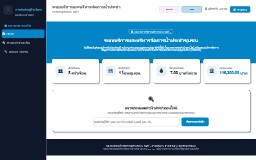
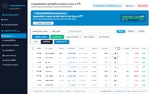
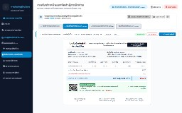
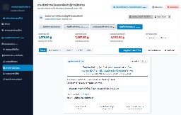
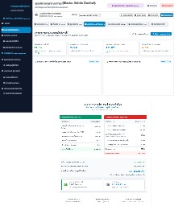
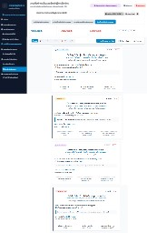

กองทุนระบบการประปาหมู่บ้านวังยาง หมู่ที่ 3 ตำบลวังยาง อำเภอวังยาง จังหวัดนครพนม
Plumber_ver-1003-gu-tam-kon-dew-i-sus.rp| เวอร์ชัน | วันที่ | ผู้รับผิดชอบ | สาระสำคัญของการปรับปรุง |
|---|---|---|---|
v0.1 |
23 ก.ค. 2567 | ทีมพัฒนาระบบประปา | ยกร่างความต้องการและโครงสร้างตารางเริ่มต้น (plumber_db.sql) |
v0.5 |
30 ก.ย. 2567 | ผู้ออกแบบ UI/UX | จัดทำ Wireframe ต้นแบบรุ่นแรก (Plumber_v4.rp) |
v0.9 |
3 ต.ค. 2567 | นักวิเคราะห์ระบบ | จัดทำต้นแบบฉบับสมบูรณ์ 31 หน้าจอ (Plumber_ver-1003-gu-tam-kon-dew-i-sus.rp) |
v1.0 |
9 ต.ค. 2567 | วิศวกรซอฟต์แวร์ | จัดทำ Full SRS ตามมาตรฐาน IEEE 830 บูรณาการร่วมกับโค้ดจริงระดับ Production |
ระบบถูกสร้างขึ้นเพื่อเปลี่ยนผ่านระบบประปาหมู่บ้านแบบกระดาษดั้งเดิมไปสู่ระบบดิจิทัล 100% แก้ไขปัญหาคลาสสิก 5 ประการ: (1) การจดมิเตอร์ตกหล่นและตัวเลขย้อนกลับ (2) ความล่าช้าในการคำนวณค่าน้ำ (3) หนี้ค้างชำระสะสมเรื้อรังที่ขาดการติดตามอย่างเป็นระบบ (4) ความไม่โปร่งใสในการหักค่าตอบแทนผู้จัดเก็บ 10% และ (5) การขาดระบบสำรองข้อมูลทางการเงินของกองทุน
| คำศัพท์/คำย่อ | ความหมายเชิงเทคนิคและระเบียบปฏิบัติราชการ |
|---|---|
| แบบ ป.17 | ทะเบียนคุมผู้ใช้น้ำและการจดบันทึกเลขอ่านมาตรวัดน้ำประจำเดือน ตามระเบียบกรมการปกครอง |
| แบบ ป.31/32 | ใบแจ้งหนี้ค่าน้ำประปา (ป.31) และใบเสร็จรับเงินค่าน้ำประปาประจำงวด (ป.32) มีผลผูกพันทางกฎหมายการเงิน |
| แบบ กค.4 | ทะเบียนคุมลูกหนี้ค้างชำระเงินค่าน้ำประปา จัดกลุ่มอายุหนี้ 1 เดือน, 2 เดือน, 3 เดือนขึ้นไป (Aging Report) |
| ฎีกา 10% | ใบสำคัญเบิกจ่ายเงินค่าตอบแทนผู้จัดเก็บค่าน้ำประปา ร้อยละ 10 จากยอดรับชำระจริงในงวดนั้นๆ |
| NRW Loss | Non-Revenue Water: ปริมาณน้ำสูญเสียในระบบท่อ (น้ำที่สูบผลิตจ่าย แต่ไม่สามารถเรียกเก็บเงินได้) |
| RBAC | Role-Based Access Control: การควบคุมสิทธิ์การเข้าถึงข้อมูลตามบทบาทหน้าที่ 4 ระดับ |
| บทบาท (Role) | กลุ่มผู้ใช้งานจริง | สิทธิ์และขอบเขตการปฏิบัติงาน | หน้าเริ่มต้น (Landing) |
|---|---|---|---|
| Superadmin | ประธานกองทุน / ผู้ใหญ่บ้าน | เข้าถึงระบบได้ 100%, อนุมัติฎีกาเบิกจ่าย, ดูงบดุล, แก้ไขอัตราค่าน้ำ, สำรอง DB | dashboard.php |
| Staff | เหรัญญิก / ช่างจดมิเตอร์ | จดเลขอ่าน ป.17, ตัดรับเงิน, ออกใบเสร็จ ป.31/32, คุมหนี้ กค.4, พิมพ์ QR Code | meter_reading.php |
| Member | สมาชิกผู้ใช้น้ำ (ชาวบ้าน) | ดูกราฟประวัติใช้น้ำย้อนหลัง, สแกน QR พร้อมเพย์จ่ายเงิน, ส่งเรื่องแจ้งท่อแตก | portal_citizen.php |
| User | ประชาชนทั่วไป / บุตรหลาน | ค้นหายอดค่าน้ำด้วยเบอร์โทรศัพท์/บ้านเลขที่, สแกนจ่ายพร้อมเพย์, แจ้งเหตุด่วน | index.php |
192.168.1.100)api/backup.php ลง Flash Drive ประจำวัน
api/db.php จะตรวจสอบว่ามีฐานข้อมูล db_city_water_supply หรือไม่ หากยังไม่มี ระบบจะสร้างและนำเข้าไฟล์ database.sql ให้โดยอัตโนมัติในทันทีที่เริ่มใช้งาน
seq_no) และพิมพ์สติกเกอร์ติดหน้าบ้านWY-xxx และแผ่นสติกเกอร์ QRregister.php, print_qr_labels.php, api/customers.php (ตาราง customers)
meter_reading.php, api/cycles.php, api/readings.php (ตาราง meter_readings)
(units_used * 7.00 บาท) + 10.00 บาท (ค่าบำรุง) + หนี้ค้างเก่า (Arrears) = ยอดรวมสุทธิcurrent < previous (มิเตอร์ย้อนกลับ) หรือใช้น้ำเกิน 3 เท่าของค่าเฉลี่ยเดิมapi/readings.php, api/db.php
index.php, portal_citizen.php, api/customers.php
[✅ รับชำระ] ตัดยอดเป็น PAID ทันที (Optimistic UI) และกด [🧾 ใบเสร็จ] เปิดพรีวิวใบเสร็จ ป.31/32 สั่งพิมพ์ได้ในคลิกเดียวRC-YYYYMM-XXX, ใบเสร็จ ป.31/32 พร้อมตัวอักษรบาทไทยfinance_billing.php (Tab 1-2), api/readings.php, api/receipts.php
index.php, portal_citizen.php, finance_billing.php, api/receipts.php
[✉️ เตือน] เปิดพิมพ์หนังสือเตือน / กดปุ่ม [💳 ตัดชำระ] สลับไป Tab 1 พร้อมกรอกชื่อลูกหนี้ให้อัตโนมัติfinance_billing.php (Tab 3: #pane-arrears), api/arrears.php
ยอดค่าตอบแทน 10% = ยอดเงินที่ชำระแล้วในงวดนั้น x 10%finance_billing.php (Tab 4: #pane-vouchers), api/vouchers.php (ตาราง payment_vouchers)
api/export_excel.phpdashboard.php, executive_reports.php, api/financials.php
index.php, portal_citizen.php, dashboard.php, api/tickets.php (ตาราง service_tickets)
ภาพต้นแบบจำลอง (Wireframes) ทั้ง 31 หน้าจอที่ออกแบบไว้ในไฟล์ Axure RP ได้รับการพัฒนาเป็นโค้ดระบบจริง (PHP Native) ครบถ้วน 100%:

index.php • ค้นหาด้วยเบอร์โทร + การ์ดสถิติ 4 ตัว + สแกน QR พร้อมเพย์

meter_reading.php • เรียงตาม seq_no + Progress Bar 88%

finance_billing.php • ตัดรับเงินทันที + ป๊อปอัปพรีวิวใบเสร็จ ป.31/32

finance_billing.php (Tab 4) • ซิงค์ 10% อัตโนมัติ + ลงนาม 3 ท่าน

executive_reports.php • บัญชีงบดุลมาตรฐาน + จุดลงนามกรรมการ

print_qr_labels.php • สติกเกอร์ QR ติดมิเตอร์ 4 รูปแบบ
| ระดับชั้น (Tier) | เทคโนโลยีและโมดูล (Components) | หน้าที่ความรับผิดชอบหลัก |
|---|---|---|
| Tier 1: Presentation | Responsive Web UI, Vanilla JS, Bootstrap 5 | แสดงผลหน้าจอมือถือ/คอมพิวเตอร์, ระบบค้นหาเบอร์โทร, สแกน QR Code |
| Tier 2: Application | PHP 8 Core, RBAC Gatekeeper, Business Engines | คำนวณค่าน้ำ 7+10 บ., ตรวจจับความผิดปกติ, กรองหนี้ กค.4, ซิงค์ 10% |
| Tier 3: Data Storage | MariaDB 10.4 / MySQL (InnoDB Engine, utf8mb4) | ธุรกรรม ACID, Foreign Keys, Zero-Config Bootstrap, 1-Click Backup |
| Tier 4: Integration | PromptPay EMVCo Lib, Excel Exporter | สร้าง Payload พร้อมเพย์ตรงสตางค์, ส่งออกสถิติค่าน้ำเป็นไฟล์ Excel |
| ชื่อตาราง (Table Name) | คีย์หลัก / คีย์นอก (Keys) | คำอธิบายและข้อมูลที่จัดเก็บ |
|---|---|---|
customers |
PK: id | UK: customer_code |
ข้อมูลสมาชิกผู้ใช้น้ำ 400 ครัวเรือน, บ้านเลขที่, โซน, เบอร์โทร, seq_no |
billing_cycles |
PK: id | UK: cycle_code |
รอบเดือน/ปีบัญชีค่าน้ำประปา เช่น 8-2567 (สิงหาคม 2567) |
meter_readings |
PK: id | FK: customer_id, cycle_id |
ประวัติเลขอ่านมิเตอร์เดิม-ใหม่, หน่วยน้ำ, ยอดเงิน, สถานะ PAID/UNPAID |
payment_vouchers |
PK: id | FK: cycle_id |
ฎีกาเบิกจ่ายกองทุน, ค่าตอบแทน 10%, ค่าไฟปั๊มน้ำ, ค่าซ่อมท่อแตก |
monthly_financial_reports |
PK: id | FK: cycle_id |
งบดุลประจำเดือน, รายรับจริง, รายจ่ายจริง, ยอดคงเหลือ, น้ำสูญเสีย NRW |
service_tickets |
PK: id | FK: customer_id |
รับแจ้งเหตุท่อแตก, น้ำประปาไม่ไหล, สถานะการเข้าซ่อมแซม |
| รหัส | ข้อกำหนดความต้องการ | ไฟล์ซอร์สโค้ด (PHP) | ตารางฐานข้อมูล | ผลการทดสอบ (Status) |
|---|---|---|---|---|
| FR-01 | ลงทะเบียนผู้ใช้น้ำ & QR สติกเกอร์ | register.php |
customers |
✓ ผ่าน (Pass) |
| FR-02 | จดมิเตอร์ตามเส้นทางจริง ป.17 | meter_reading.php |
meter_readings |
✓ ผ่าน (Pass) |
| FR-03 | คำนวณค่าน้ำ 7+10 บ. & ตรวจผิดปกติ | api/readings.php |
meter_readings |
✓ ผ่าน (Pass) |
| FR-04 | ค้นหายอดค่าน้ำด้วยเบอร์โทร | index.php |
customers |
✓ ผ่าน (Pass) |
| FR-05 | ตัดรับชำระเงิน & ใบเสร็จ ป.31/32 | finance_billing.php |
meter_readings |
✓ ผ่าน (Pass) |
| FR-06 | สร้าง QR Code พร้อมเพย์ EMVCo | api/receipts.php |
- | ✓ ผ่าน (Pass) |
| FR-07 | คุมหนี้ กค.4 & หนังสือเตือน 7 วัน | finance_billing.php |
meter_readings |
✓ ผ่าน (Pass) |
| FR-08 | ฎีกาเบิกจ่าย 10% & ค่าใช้จ่ายกองทุน | api/vouchers.php |
payment_vouchers |
✓ ผ่าน (Pass) |
| FR-09 | งบดุล รายรับ-รายจ่าย & รายงาน NRW | executive_reports.php |
monthly_financial_reports |
✓ ผ่าน (Pass) |
| FR-10 | รับแจ้งท่อแตก & ติดตามงานซ่อม | api/tickets.php |
service_tickets |
✓ ผ่าน (Pass) |